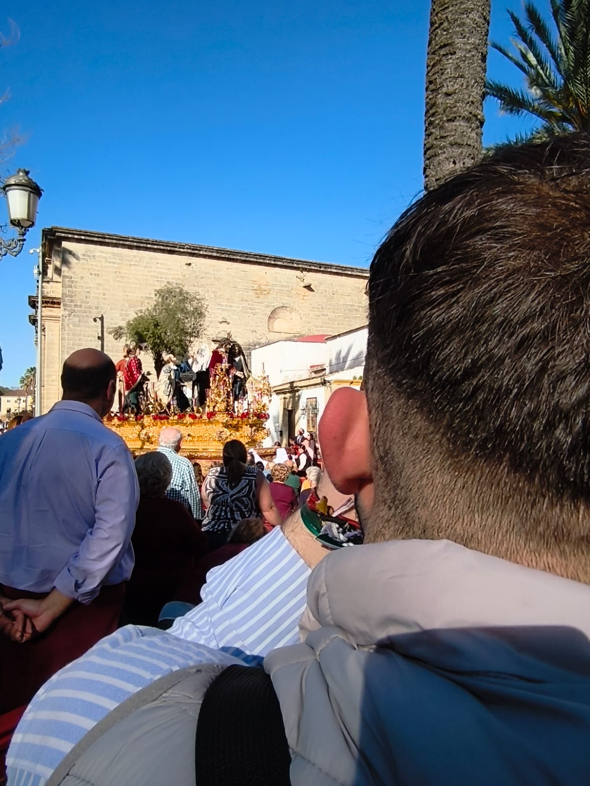

Sobre mí
Soy Manu Sánchez, fotógrafo cofrade. Crecí entre ensayos, besamanos y madrugadas de incienso, y desde que tuve una cámara entre las manos he intentado contar lo que se siente más que lo que se ve.
He retratado hermandades, cultos y salidas procesionales, siempre desde dentro: conociendo a quienes las hacen posibles y esperando el momento justo.
No fotografío un paso, fotografío lo que ocurre alrededor de él: la mirada, el silencio, la luz.
Filosofía
Luz natural, ningún flash que rompa el culto, y un respeto absoluto por quienes rezan. Edito con contención: la mejor imagen es la que parece no haber sido tocada.